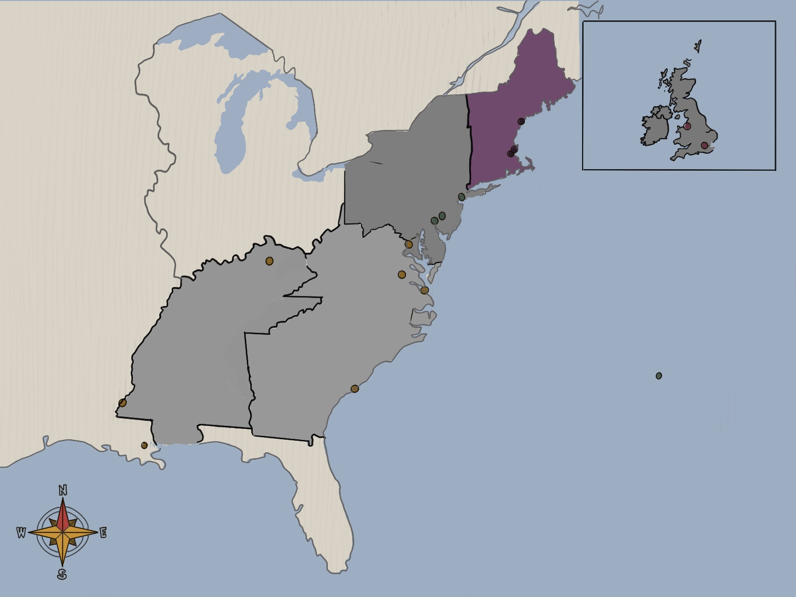
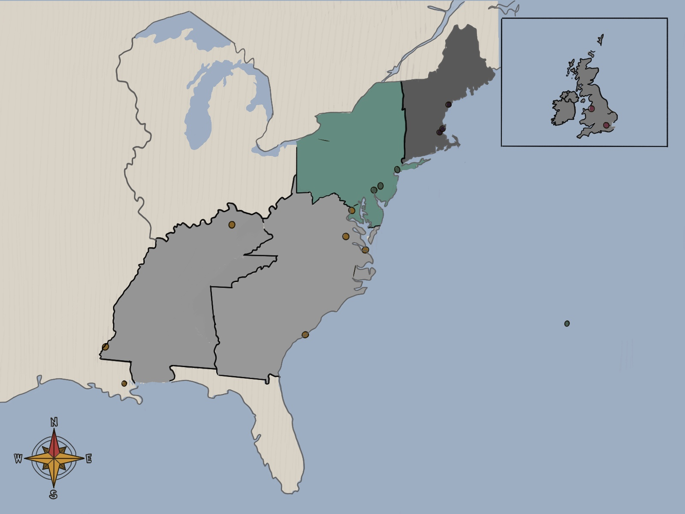
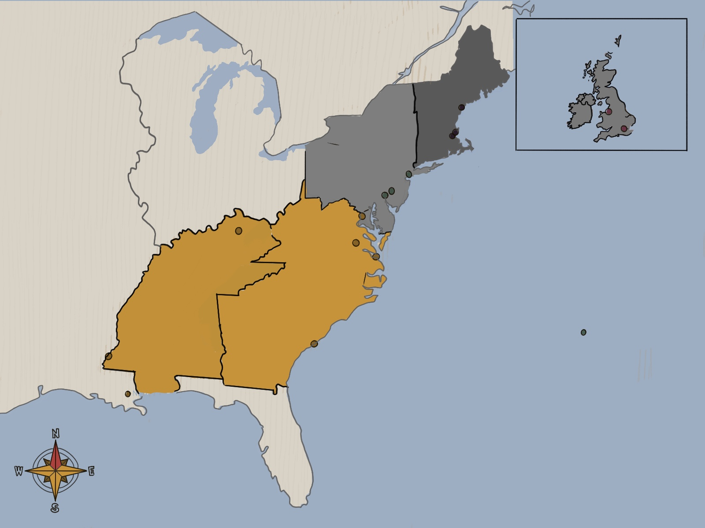

1790
Ports outside the four regions: one small receipt per city and month.
Prices from American newspaper “price currents”, 1770–1810



Ports outside the four regions: one small receipt per city and month.